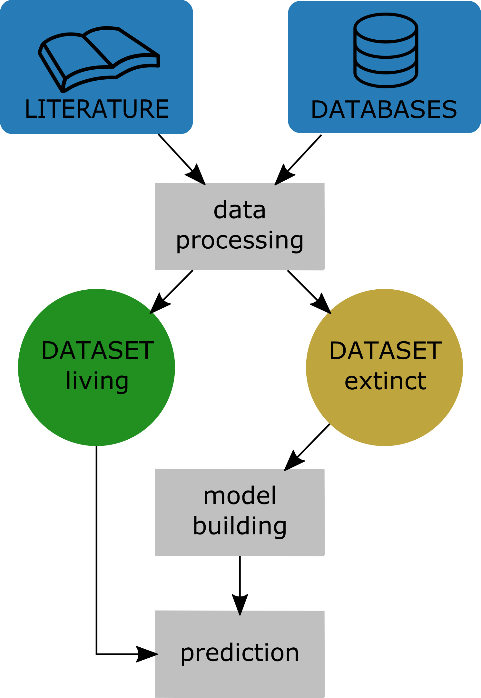

Temporal patterns in extinction risk factors and climate in the amphibian fossil record
In the coming decades we might face the loss of more than 50% of the climatic ranges for more than half of plants and 34% of animals [1]. Abrupt greenhouse driven climate change and synergistic effects, e.g. disrupted migration pathways and breeding cycles, changing predator, competitor and prey relations, habitatloss as well as diseases, are significant contributors to this biodiversity destruction. Although often ignored from a public perspective, or considered to be of lesser importance than likeable flagship species, amphibians alongside reptiles might face greatest extinction risk under current changing climate [2].
This project aims at connecting changing climatic conditions and temporal trends in amphibian traits, including extinction risk and diversity, to expand our knowledge about current and future extinction threats to amphibians. The project uses oxygen isotope data to reconstruct the relative temperature changes as well as latitudinal temperature gradients.
##Results This is work in progress.
Literature
- Warren, R., et al. “Quantifying the benefit of early climate change mitigation in avoiding biodiversity loss.” Nature Climate Change 3.7 (2013): 678‐682.
- Stuart, S. N., et al. “Status and trends of amphibian declines and extinctions worldwide.” Science 306.5702 (2004): 1783‐1786.
Extinction risk in fossil and living amphibians
Background
Amphibians are the most endangered terrestrial vertebrate group [1]. Several studies examined biological, environmental and also anthropogenic factors that can potentially add to extinction risk [2]. Typical influential factors are the geographic range size and bodysize of a species, which have been confirmed in studies on fossils from extinct species as well [3].
Although amphibians are one of the most threatened groups today, their fossil record and the recorded extinction events of amphibians are usually not taken into account. As the fossil record invites to study plenty of real extinction events, it can provide valuable information about factors influencing a species survival.
Results
We were able to show in a unique combination of fossil and neontological data how the fossil can actually predict the extinction risk of living species [4].

Model framework for the study. Tietje, M. and Rödel, M. O. (2018), figure 1.
We used generalised boosted modelling to analyse the impact of several traits that are assumed to influence extinction risk on the stratigraphic duration of amphibian species in the fossil record. We used this fossil calibrated model to predict the extinction risk for living species. We observed a high consensus between our predicted species durations and the current IUCN Red List status of living amphibian species. We also found that today’s Data Deficient species are mainly predicted to experience short durations, hinting at their likely high threat status. Our study suggests that the fossil record can be a suitable tool for the evaluation of current taxa specific Red Listing status.

Predicted durations in million years for living amphibian species, based on the model fitted with paleontological data. Tietje, M. and Rödel, M. O. (2018), figure 3.
Literature
- Baillie, J. E. M., Griffiths, J., Turvey, S. T., Loh, J. & Collen, B. 2010 Evolution Lost: Status and Trends of the World’s Vertebrates. Zoological Society of London.
- Sodhi, N. S., Bickford, D., Diesmos, A. C., Lee, T. M., Koh, L. P., Brook, B. W., Sekercioglu, C. H. & Bradshaw, C. J. A. 2008 Measuring the meltdown: drivers of global amphibian extinction and decline. PLoS One 3, e1636. (doi:10.1371/journal.pone.0001636)
- Harnik, P. G. 2011 Direct and indirect effects of biological factors on extinction risk in fossil bivalves. Proc. Natl. Acad. Sci. U. S. A. 108, 13594–13599. (doi:10.1073/pnas.1100572108)
- Tietje, M. and Rödel, M. O. (2018), Evaluating the predicted extinction risk of living amphibian species with the fossil record. Ecology Letters. doi:10.1111/ele.13080
This page is licensed

2019 Melanie Tietje
Last update: